Cape Town Tennis · 2026 season
Cape Town
Tennis League
Every fixture. Every result. Every point on the table. Follow the city’s clubs throughout the 2026 Men’s & Ladies League.

Clubs competing in 2026
Connecting to the live league sheet…
Match centre
Fixtures & Results
Browse the full 2026 schedule or switch to completed ties as scores arrive.
Live league tables
Division Standings
League points determine rank, with sets difference shown as the first tie-break.
Current table
League standings
Season at a glance
The road to the Shootout
The first Men’s and Ladies fixtures get the 2026 campaign underway.
A final window to complete postponed or outstanding league ties.
Division contenders close the season in the end-of-year Shootout.
Live match centre
Live Scores
Choose a competing tennis club to follow its active court feeds. Scores will appear automatically when a live feed is available.
Waiting for a live match
Select a club or check back once play begins.
Waiting for a live match
Select a club or check back once play begins.
Waiting for a live match
Select a club or check back once play begins.
Waiting for a live match
Select a club or check back once play begins.